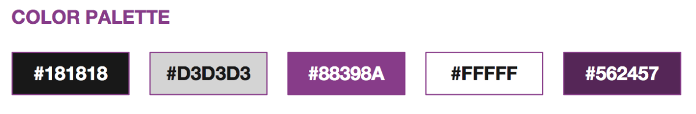
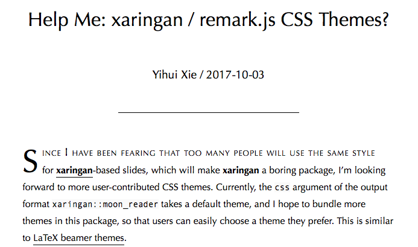

R-Ladies Presentation Ninja
By Alison Hill in rladies xaringan
December 18, 2017
So, you are doing an R-Ladies presentation…that’s awesome!
The short version
I made an R-Ladies theme for xaringan slides. My original tweet about it:
if you want to use @xieyihui's awesome #xaringan package for #rstats slides but want more #Rladies flavor, there is now a built-in theme for that (with code highlighting)! Thanks to the awesome @RLadiesGlobal starter kit. Update the CSS in your YAML to use 🧙🏽♀️🧞♀️ pic.twitter.com/YnlGSVAMsl
— Alison Hill (@apreshill) November 29, 2017
The way to use the theme is to update the YAML like so:
output:
xaringan::moon_reader:
css: ["default", "rladies", "rladies-fonts"]
Make sure your version of xaringan is up-to-date.
Below is a demo slide deck using the theme.
(view the source .Rmd on GitHub)
The longer story
I recommend Yihui’s xaringan package for slides. This is an R package, available through GitHub, for creating slideshows with remark.js through R Markdown. This means that you can:
- write all your slides in Markdown text
- include chunks of R code and rendered output like plots, results, tables, etc. in your slides
- use git for version control and share your GitHub repository
This makes xaringan ideal for an R-Ladies presentation!1
To use the package, you’ll need the
devtools package installed so that you can use the install_github function. Then do:
devtools::install_github('yihui/xaringan')
As Yihui points out in the documentation, if you use RStudio, you can use the menu to navigate to File -> New File -> R Markdown -> From Template -> Ninja Presentation, and you will see an R Markdown example.
I first used xaringan a few months ago. I was working with Yihui on the blogdown book, and had signed up to lead a workshop for the Portland R User group. Obviously, such a workshop could not have powerpoint slides, so it seemed like the perfect time to learn xaringan.
For my workshop, I made a simple website for the newly founded R-Ladies PDX using blogdown (Thanks to Augustina and Deeksha, our fearless organizers). So naturally, my slides needed more purple.
Luckily, the R-Ladies run a tight ship- they have a starter kit on GitHub that details all the pretty purples they like.

About a month after I did the R-Ladies blogdown workshop, I saw this blog post by Yihui:

First, I thought this was such a cool idea and I hope more people make and submit themes. Then I realized, I had already made a theme! I submitted a pull request2, Yihui helped me make some edits to the CSS files to make them more parsimonious with the default theme, I electronically signed a contributor agreement, and now the theme is there for you all to enjoy and use! You use the theme by editing the YAML:
output:
xaringan::moon_reader:
css: ["default", "rladies", "rladies-fonts"]
If you use the theme and you are on twitter, I’d love to see it- please mention me on twitter!
Examples!
- My blogdown workshop slides: “Up and running with blogdown” (view the source .Rmd on GitHub)
-
Yihui’s technical instructions for contributors section of that blog post has been revised and is very detailed ↩︎